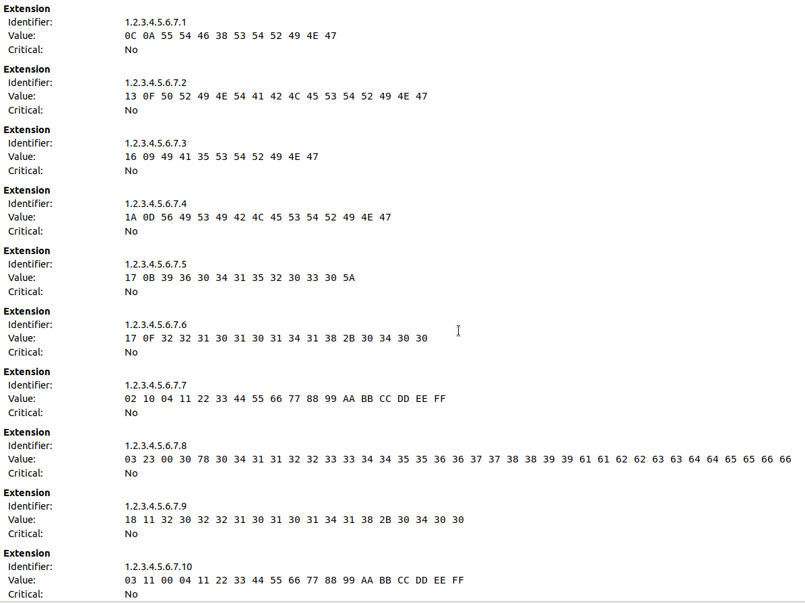

Datentypen für Custom Extensions von X509-Zertifikaten
Ich habe in letzter Zeit über die Möglichkeiten der Ergänzung von Zertifikaten durch das Hinzufügen beliebiger Informationen nachgedacht und dazu diverse Tests mit OpenSSL vollzogen um genau herauszufinden, wie man die verschiedenen Datentypen über openssl.conf definieren und hinzufügen kann.
Prinzipiell lassen sich beliebig komplexe Extensions konstruieren, wie etwa dieses Beispiel zeigt:
SMIME-CAPS = ASN1:SEQUENCE:smime_seq
#...
[ smime_seq ]
SMIMECapability.0 = SEQWRAP,OID:sha1
SMIMECapability.1 = SEQWRAP,OID:sha256
SMIMECapability.2 = SEQWRAP,OID:sha1WithRSA
SMIMECapability.3 = SEQWRAP,OID:aes-256-ecb
SMIMECapability.4 = SEQWRAP,OID:aes-256-cbc
SMIMECapability.5 = SEQWRAP,OID:aes-256-ofb
SMIMECapability.6 = SEQWRAP,OID:aes-128-ecb
SMIMECapability.7 = SEQWRAP,OID:aes-128-cbc
SMIMECapability.8 = SEQWRAP,OID:aes-128-ecb
SMIMECapability.9 = SEQUENCE:rsa_enc
In OpenSSL - und damit in der openssl.conf stehen verschiedene Datentypen zur Verfügung, um custom Extensions daraus zu erstellen. Man beachte, dass das allerdings nicht alle in ASN1 möglichen Datentypen sind, sondern OpenSSL nur eine Untermenge davon anbietet.
Folgendes kurze Stück einer Konfiguration zeigt einige Beispiele des Einsatzes dieser Datentypen zur Definition von custom Extensions:
1.2.3.4.5.6.7.1 = ASN1:UTF8String:UTF8STRING
1.2.3.4.5.6.7.2 = ASN1:PRINTABLESTRING:"PRINTABLESTRING"
1.2.3.4.5.6.7.3 = ASN1:IA5STRING:"IA5STRING"
1.2.3.4.5.6.7.4 = ASN1:VISIBLESTRING:"VISIBLESTRING"
1.2.3.4.5.6.7.5 = ASN1:UTCTIME:"9604152030Z"
1.2.3.4.5.6.7.6 = ASN1:UTCTIME:"2210101418+0400"
1.2.3.4.5.6.7.7 = ASN1:INTEGER:0x04112233445566778899aabbccddeeff
1.2.3.4.5.6.7.8 = ASN1:BITSTR:0x04112233445566778899aabbccddeeff
1.2.3.4.5.6.7.9 = ASN1:GENERALIZEDTIME:"202210101418+0400"
1.2.3.4.5.6.7.10 = ASN1:FORMAT:HEX,BITSTR:04112233445566778899aabbccddeeff
Man beachte besonders die spezielle Kodierung von BITSTR (OID 1.2.3.4.5.6.7.10) - hier muss mittels FORMAT:HEX angegeben werden, dass die Kodierung binär erfolgen soll.
Damit erhält man ein Zertifikat, das mit dem OpenSSL-Kommando 'openssl x509 -in some_certificate.crt -noout -text' folgende Ausgabe der custom Extensions ergibt:
1.2.3.4.5.6.7.1:
.UTF8STRING
1.2.3.4.5.6.7.2:
..PRINTABLESTRING
1.2.3.4.5.6.7.3:
..IA5STRING
1.2.3.4.5.6.7.4:
.
1.2.3.4.5.6.7.5:
..9604152030Z
1.2.3.4.5.6.7.6:
..2210101418+0400
1.2.3.4.5.6.7.7:
...."3DUfw........
1.2.3.4.5.6.7.8:
.#.0x04112233445566778899aabbccddeeff
1.2.3.4.5.6.7.9:
..202210101418+0400
1.2.3.4.5.6.7.10:
....."3DUfw........
Man erkennt die Auswirkung von FORMAT:HEX beim Vergleich der Daten unter den OIDs 1.2.3.4.5.6.7.8 und 1.2.3.4.5.6.7.10.
In einer GUI-Anwendung zur Anzeige von Zertifikaten würde der entsprechende Abschnitt zum Beispiel wie hier dargestellt aussehen:

Custom Extensions entsprechend der oben angegebenen KonfigurationLiest man das Zertifikat in einem Programm ein und extrahiert die Extensions (wie hier im Beispiel eines Java-Programms), dann erhält man die konfigurierten Werte zurück:
private static void decode(byte[] ba) throws IOException, ParseException
{
DEROctetString envelope = (DEROctetString) new ASN1InputStream(ba).readObject();
System.out.println(envelope.getLoadedObject().getClass()+" "+envelope.getLoadedObject());
ASN1Primitive derObject = toDERObject(ba);
if (derObject instanceof DEROctetString)
{
DEROctetString derOctetString = (DEROctetString) derObject;
derObject = toDERObject(derOctetString.getOctets());
if (derObject instanceof DERBitString)
{
DERBitString b = (DERBitString)derObject;
System.out.println("decoded ("+derObject.getClass().getSimpleName()+")=\n"+de.elbosso.util.Utilities.hexdump(b.getBytes()));
}
else if (derObject instanceof ASN1String)
{
ASN1String s = (ASN1String)derObject;
System.out.println("decoded ("+derObject.getClass().getSimpleName()+")="+s.getString());
}
else if (derObject instanceof ASN1UTCTime)
{
ASN1UTCTime t=(ASN1UTCTime) derObject;
System.out.println("decoded ("+derObject.getClass().getSimpleName()+")="+t.getDate()+" "+t.getAdjustedDate());
}
else if (derObject instanceof ASN1Integer)
{
ASN1Integer i=(ASN1Integer) derObject;
System.out.println("decoded ("+derObject.getClass().getSimpleName()+")="+i.getValue());
}
else if (derObject instanceof ASN1GeneralizedTime)
{
ASN1GeneralizedTime d=(ASN1GeneralizedTime) derObject;
System.out.println("decoded ("+derObject.getClass().getSimpleName()+")="+d.getDate());
}
else
System.out.println("not handled: "+derObject.getClass());
}
else
{
System.out.println("no DEROctetString: "+derObject.getClass());
}
}
Ergebnis:
1.2.3.4.5.6.7.1 decoded (DERUTF8String)=UTF8STRING
1.2.3.4.5.6.7.2 decoded (DERPrintableString)=PRINTABLESTRING
1.2.3.4.5.6.7.3 decoded (DERIA5String)=IA5STRING
1.2.3.4.5.6.7.4 decoded (DERVisibleString)=VISIBLESTRING
1.2.3.4.5.6.7.5 decoded (ASN1UTCTime)=Mon Apr 15 22:30:00 CEST 1996 Mon Apr 15 22:30:00 CEST 1996
1.2.3.4.5.6.7.6 decoded (ASN1UTCTime)=Mon Oct 10 12:18:00 CEST 2022 Mon Oct 10 12:18:00 CEST 2022
1.2.3.4.5.6.7.7 decoded (ASN1Integer)=5405874693445791194481469968554520319
1.2.3.4.5.6.7.8 decoded (DERBitString)=
00000000h 30 78 30 34 31 31 32 32 33 33 34 34 35 35 36 36 0x04112233445566
00000010h 37 37 38 38 39 39 61 61 62 62 63 63 64 64 65 65 778899aabbccddee
00000020h 66 66 ff
1.2.3.4.5.6.7.9 decoded (ASN1GeneralizedTime)=Mon Oct 10 12:18:00 CEST 2022
1.2.3.4.5.6.7.10 decoded (DERBitString)=
00000000h 04 11 22 33 44 55 66 77 88 99 aa bb cc dd ee ff .."3DUfw........
Artikel, die hierher verlinken
Attribute und Custom Extensions in X.509v3 Zertifikaten
11.12.2022
Wie bereits im letzten Artikel zu diesem Thema angedeutet kann man in X.509 Zertifikate der Version 3 beliebige Daten einbetten.


Vor 5 Jahren hier im Blog
-
dWb+ und Grafana
02.02.2019
Nachdem ich meine GitLab-Instanz auf ein neueres Linux aktualisiert hatte, hatte ich mit verschiedenen Nachwehen zu kämpfen - unter anderem funktionierte CI/CD nicht mehr...
Weiterlesen...
Tags
Android Basteln C und C++ Chaos Datenbanken Docker dWb+ ESP Wifi Garten Geo Git(lab|hub) Go GUI Gui Hardware Java Jupyter Komponenten Links Linux Markdown Markup Music Numerik PKI-X.509-CA Python QBrowser Rants Raspi Revisited Security Software-Test sQLshell TeleGrafana Verschiedenes Video Virtualisierung Windows Upcoming...
Neueste Artikel
- Migration weg von Repsy
Ich habe Repsy verlassen.
Weiterlesen... - Visualisierung von EXPLAIN für MySQL
Ich habe bereits über mein Plugin für die sQLshell zur Visualisierung von Resultaten des EXPLAIN-Statements in PostgreSQL berichtet.
Weiterlesen... - Autocomplete mit LSP und Vim
Ich habe bereits über meine Bemühungen berichtet, mir Vim so zu konfigurieren, dass ich nicht mehr von irgendwelchen IDEs abhängig bin und trotzdem einigermaßen komfortabel Software entwickeln kann.
Weiterlesen...
Manche nennen es Blog, manche Web-Seite - ich schreibe hier hin und wieder über meine Erlebnisse, Rückschläge und Erleuchtungen bei meinen Hobbies.
Wer daran teilhaben und eventuell sogar davon profitieren möchte, muß damit leben, daß ich hin und wieder kleine Ausflüge in Bereiche mache, die nichts mit IT, Administration oder Softwareentwicklung zu tun haben.
Ich wünsche allen Lesern viel Spaß und hin und wieder einen kleinen AHA!-Effekt...
PS: Meine öffentlichen GitHub-Repositories findet man hier - meine öffentlichen GitLab-Repositories finden sich dagegen hier.